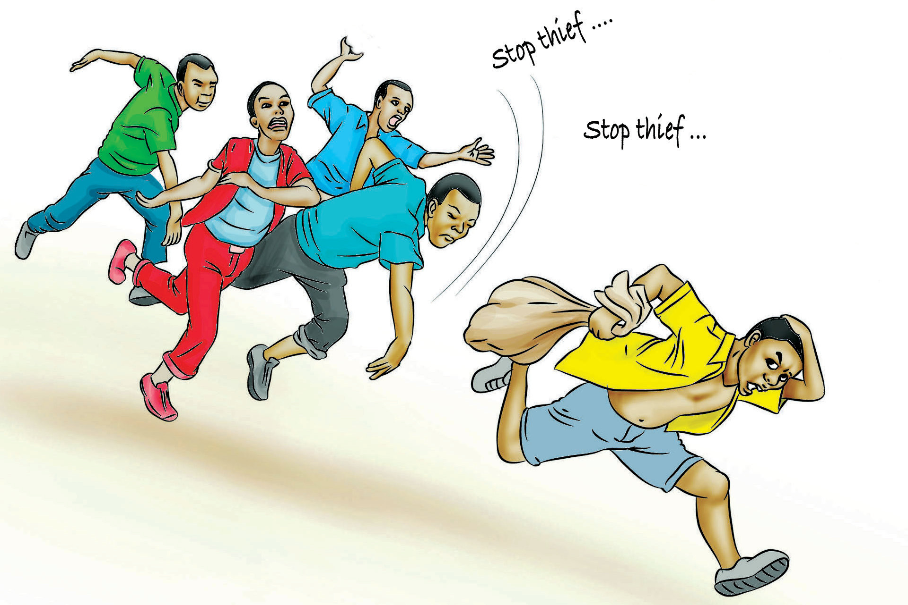

English for Secondary Schools Student’s Book Form One, printed page 80

A thief runs away carrying a sack while four people chase him, shouting, “Stop thief!”Stop thief
Stop thief
Questions
1.
What did Zundo do?
2.
Write five words that describe Zundo’s behaviour from the passage. Then, construct five sentences using the words you have identified.
(i)
Write the opposite (antonyms) of the words listed in the following table. The opposite of the first word is provided as an example.
| Word | Antonym |
|---|---|
| hardworking | lazy/idle |
| cruel | |
| rough | |
| sincere | |
| careless | |
| generous |